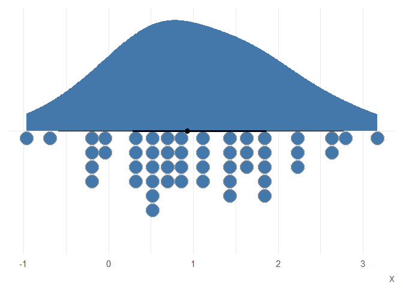
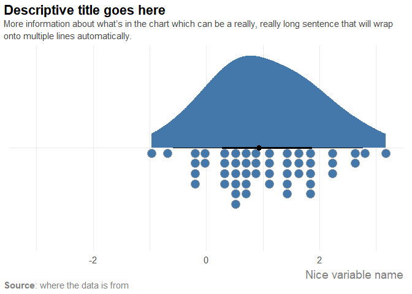
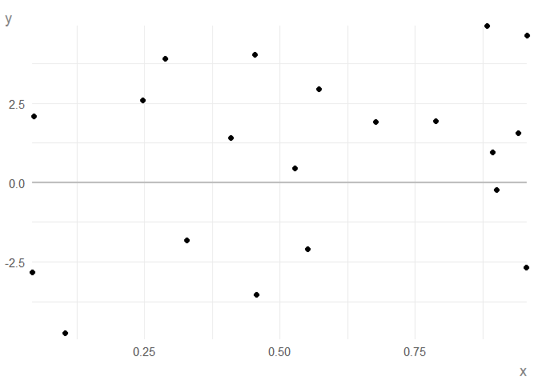
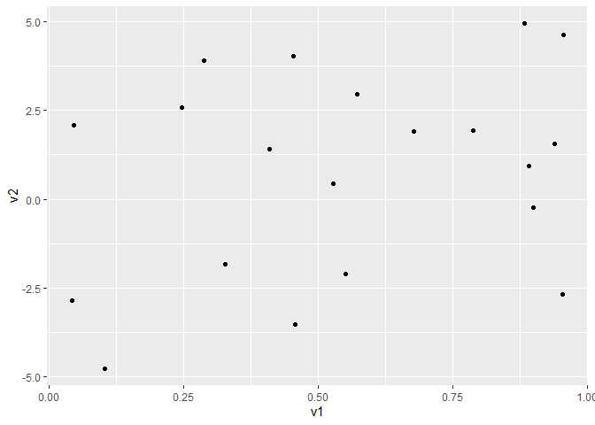
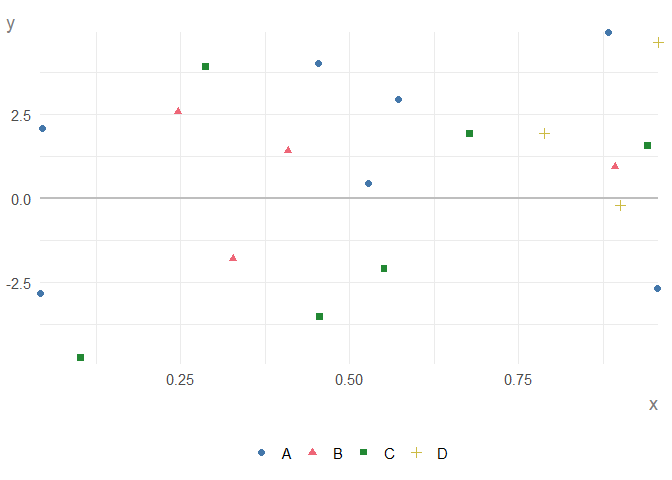
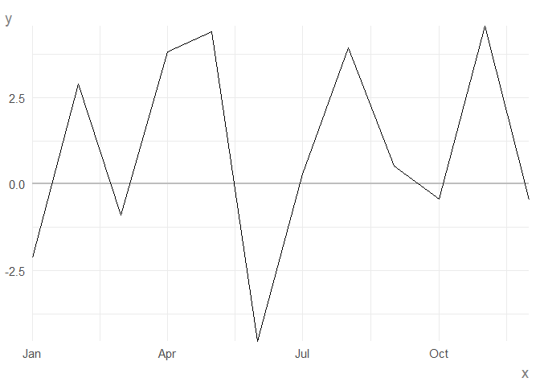
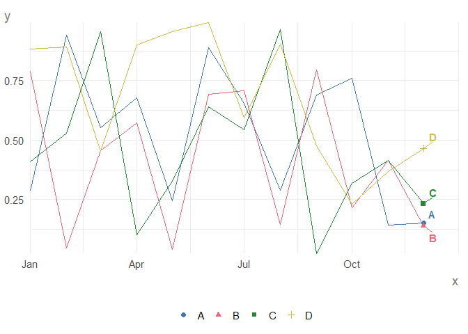

ggauto is an opinionated ggplot2 extension package to automatically choose the best chart type and styling, based on the types and values in the data.
[!WARNING] If you don’t like some (or all) of the opinionated choices in this package, make a fork and create your own version. Bug reports and/or fixes are extremely welcome for things that don’t work, but stylistic changes that are personal preferences will not be addressed.
In terms of styling, the defaults differ from ggplot2 in the following ways:
- The use of a white background to improve contrast.
- Larger text which is aligned horizontally to improve readability.
- Improved styling for title and subtitle, including automatic text wrapping for long text.
- Colours that are more likely to be accessible, using Paul Tol’s palettes.
- Combined use of either shapes or direct labels alongside colour to improve accessibility.
- Symmetric
yaxis, when0is included in the data (for some chart types), to enable comparison. - Errors when users try to make spaghetti line charts.
Installation
You can install the development version of ggauto from GitHub with:
# install.packages("pak")
pak::pak("nrennie/ggauto")Load the package:
Mapping data types to chart types
Variable types
The available data types are based on the scale_x/y_ options in ggplot2:
- Continuous
- Discrete (categorical)
- Date (including time and datetime)
Chart types
| var1 | var2 | var3 | Chart Type | Implemented |
|---|---|---|---|---|
| Continuous | - | - | Raincloud plot | Yes |
| Continuous | Continuous | - | Scatter plot | Yes |
| Continuous | Continuous | Discrete | Scatter plot with coloured shapes | Yes |
| Discrete | - | - | Bar chart (showing count of categories) | Not yet |
| Discrete | Continuous | - | Bar chart (if one value per category) or raincloud plot (if multiple values per category) | Not yet |
| Discrete | Discrete | - | Heatmap (showing count of category combinations) | Not yet |
| Discrete | Discrete | Continuous | Heatmap (showing continuous variable) | Not yet |
| Date | Continuous | - | Line chart | Yes |
| Date | Continuous | Discrete | Line chart with coloured lines | Yes |
Examples
One continuous variable
set.seed(123)
plot_data <- data.frame(
v1 = rnorm(50, 1)
)Pass columns of the data in as vectors:
ggauto(plot_data$v1)
Note the symmetric x-axis, which is added then 0 exists in the range of x values. Since the output of ggauto() is simply a ggplot2 chart, you can override this if you don’t want it:
ggauto(plot_data$v1) +
scale_x_continuous()
#> Scale for x is already present.
#> Adding another scale for x, which will replace the existing scale.
You’ll get a warning to say you are replacing the existing scale which you can ignore because it’s what you’re trying to do!
You can a title, subtitle, caption, and labels with the labs() function in ggplot2 as you normally would, or directly using the same arguments in ggauto(). The latter is recommended as the arguments are used a little abnormally to implement the styling. You can add markdown formatting into the title, subtitle, or caption:
ggauto(plot_data$v1,
title = "Descriptive title goes here",
subtitle = "More information about what's in the chart which can be a really, really long sentence that will wrap onto multiple lines automatically.",
caption = "**Source**: where the data is from",
xlab = "Nice variable name"
)
Two continuous variables
Let’s create a basic dataset with two continuous variables:
set.seed(123)
plot_data <- data.frame(
v1 = runif(20),
v2 = runif(20, -5, 5)
)
ggauto(plot_data$v1, plot_data$v2)
Compare to a basic, default scatter plot in ggplot2:
ggplot(
data = plot_data,
mapping = aes(x = v1, y = v2)
) +
geom_point()
Two continuous variables, one discrete
set.seed(123)
plot_data <- data.frame(
v1 = runif(20),
v2 = runif(20, -5, 5),
v3 = sample(LETTERS[1:4], 20, replace = TRUE)
)
ggauto(plot_data$v1, plot_data$v2, plot_data$v3)
One date variable, one continuous variable
set.seed(123)
plot_data <- data.frame(
v1 = seq(
as.Date("01-01-2024", tryFormats = "%d-%m-%Y"),
as.Date("01-12-2024", tryFormats = "%d-%m-%Y"),
by = "months"
),
v2 = runif(12, -5, 5)
)
ggauto(plot_data$v1, plot_data$v2)
One date variable, one continuous variable, one discrete variable
Category labels are added at the end of each line automatically. At the moment, you will need to manually adjust the x axis to make sure they fit in (depending on the length of your category labels).
set.seed(123)
plot_data <- data.frame(
v1 = rep(seq(
as.Date("01-01-2024", tryFormats = "%d-%m-%Y"),
as.Date("01-12-2024", tryFormats = "%d-%m-%Y"),
by = "months"
), each = 4),
v2 = runif(48),
v3 = rep(LETTERS[1:4], times = 12)
)
ggauto(plot_data$v1, plot_data$v2, plot_data$v3) +
scale_x_date(limits = as.Date(c("01-01-2024", "31-12-2024"),
tryFormats = "%d-%m-%Y"
))
If you try to use more than 6 colours, an error will be returned. Future iterations of this package may automatically use small multiples (facets) in this situation.
set.seed(123)
plot_data <- data.frame(
v1 = rep(seq(
as.Date("01-01-2024", tryFormats = "%d-%m-%Y"),
as.Date("01-12-2024", tryFormats = "%d-%m-%Y"),
by = "months"
), each = 7),
v2 = runif(84),
v3 = rep(LETTERS[1:7], times = 12)
)
ggauto(plot_data$v1, plot_data$v2, plot_data$v3)
#> Error in `ggauto()`:
#> ! You cannot use more than 6 colours.